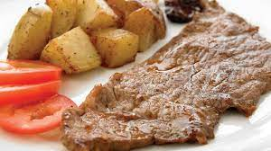

lista del supermercado
- VERDURAS
- ZANAHORIA
ZANAHORIA ES UNA VERDURA
- PAPA
PAPA ES UNA VERDURA
- YUCA
.jpg) YUCA ES UNA VERDURA/TUBERCULO
YUCA ES UNA VERDURA/TUBERCULO
- TOPOCHO
TOPOCHO ES UNA VERDURA
- CARNES
- POLLO
POLLO ES UN AVE COMESTIBLE
- BISTEC

BISTEC ES CARNE DE RES
- COCHINO
.jpg) COCHINO CARNE ANIMAL
COCHINO CARNE ANIMAL
- FRUTAS
- MANZANA
MANZANA ES UNA FRUTA
- MANDARINA
MANDARINA ES UNA FRUTA
- MELON
MANDARINA ES UNA FRUTA